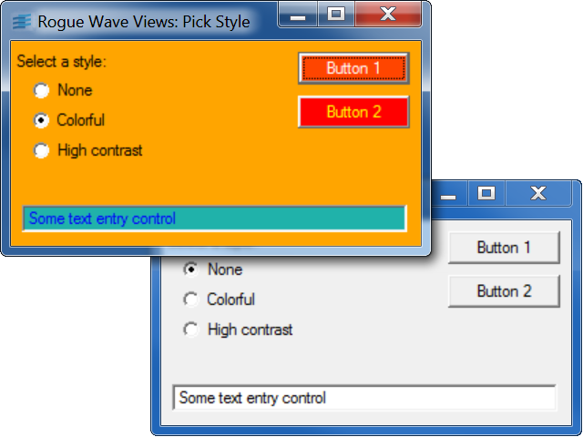

pickThis sample shows how to select and apply a CSS style sheet to a Gadget Container.
When a CSS style sheet is set on a Gadget Holder, the gadgets graphic resources are impacted when a display refresh is requested.
This sample demonstrates the use of CSS pseudo-classes (see the style sheet in colorful.css) and id selectors (see the style sheet in highcontrast.css).
IlvCSSStyleSheet